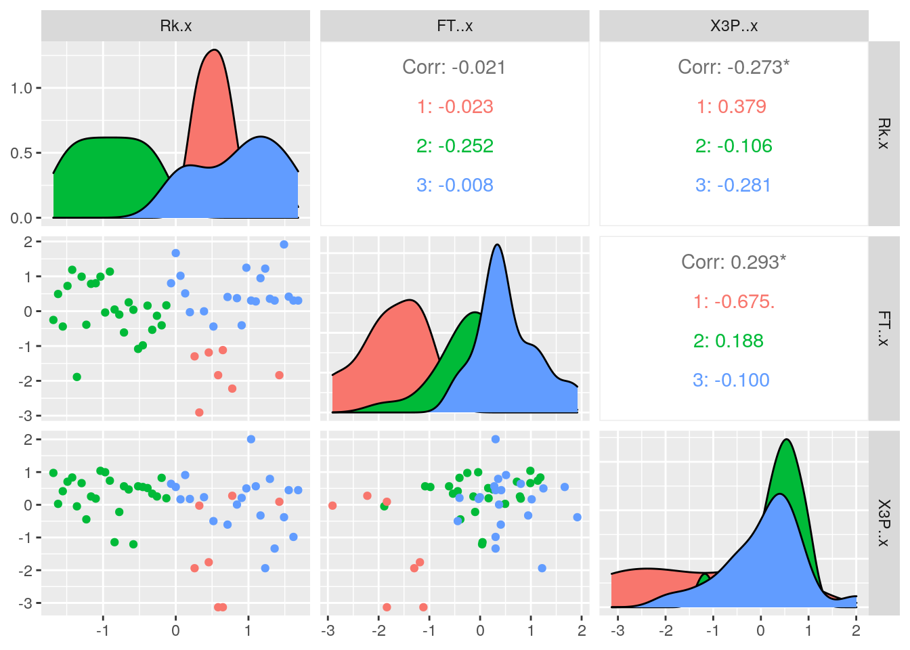

January 1, 0001
R Markdown
This is an R Markdown document. Markdown is a simple formatting syntax for authoring HTML, PDF, and MS Word documents. For more details on using R Markdown see http://rmarkdown.rstudio.com.
When you click the Knit button a document will be generated that includes both content as well as the output of any embedded R code chunks within the document. You can embed an R code chunk like this:
library(tidyverse)## ── Attaching packages ────────────────────────────────── tidyverse 1.3.0.9000 ──## ✓ ggplot2 3.3.3 ✓ purrr 0.3.4
## ✓ tibble 3.1.0 ✓ dplyr 1.0.5
## ✓ tidyr 1.1.3 ✓ stringr 1.4.0
## ✓ readr 1.4.0 ✓ forcats 0.5.1## ── Conflicts ────────────────────────────────────────── tidyverse_conflicts() ──
## x dplyr::filter() masks stats::filter()
## x dplyr::lag() masks stats::lag()library(pastecs)##
## Attaching package: 'pastecs'## The following objects are masked from 'package:dplyr':
##
## first, last## The following object is masked from 'package:tidyr':
##
## extractlibrary(Hmisc)## Loading required package: lattice## Loading required package: survival## Loading required package: Formula##
## Attaching package: 'Hmisc'## The following objects are masked from 'package:dplyr':
##
## src, summarize## The following objects are masked from 'package:base':
##
## format.pval, unitsknitr::opts_chunk$set(echo = TRUE, eval = TRUE, fig.align = "center",
warning = F, message = F, tidy = TRUE, tidy.opts = list(width.cutoff = 60),
R.options = list(max.print = 100))
nbadraft2019 <- read.csv("nbadraft2019.csv",
header = TRUE,
quote="\"",
stringsAsFactors= TRUE,
strip.white = TRUE)
nbadraft2018 <- read.csv("nbadraft2018.csv",
header = TRUE,
quote="\"",
stringsAsFactors= TRUE,
strip.white = TRUE)The two data sets I chose are the first 53 draft picks for the NBA in 2018 and 2019. The variables in each data set are roughly the same, these being the players name, their total games played, total minutes played, the college they went to, their field goal percentage, three point percentage, points per game, assists per game, minutes played per game, etc. These data sets were acquired from a Basketball Reference website that had the draft pick statistics for each year. These data sets are interesting to me because I have been watching the NBA since I was little and really like basketball.
nba_joined_2019_2018 <- nbadraft2019 %>% left_join(nbadraft2018,
by = "Pk")I chose to join the two data sets using the left_join function with the common varibale being “Pk” or each players draft pick number. I chose to do a left_join instead of a full_join because it still allowed for all variables to be intact, without having to drop anything.
filter(nba_joined_2019_2018, (Total_PTS.x > 1000 & Total_PTS.y >
1000))## Rk.x Year.x Pk Tm.x Player.x College.x Yrs.x Total_G.x Total_MP.x
## 1 1 2019 1 NOP Zion Williamson Duke 2 65 2007
## 2 2 2019 2 MEM Ja Morant Murray State 2 99 3083
## Total_PTS.x Total_TRB.x Total_AST.x FG..x X3P..x FT..x Per_Game_MP.x
## 1 1595 438 191 0.607 0.382 0.685 30.9
## 2 1812 366 727 0.464 0.294 0.772 31.1
## Per_Game_PTS.x Per_Game_TRB.x Per_Game_AST.x WS.x WS.48.x BPM.x VORP.x Rk.y
## 1 24.5 6.7 2.9 7.9 0.188 3.9 3.0 1
## 2 18.3 3.7 7.3 5.4 0.085 0.0 1.5 2
## Year.y Tm.y Player.y College.y Yrs.y Total_G.y Total_MP.y
## 1 2018 PHO Deandre Ayton Arizona 3 154 4794
## 2 2018 SAC Marvin Bagley III Duke 3 112 2852
## Total_PTS.y Total_TRB.y Total_AST.y FG..y X3P..y FT..y Per_Game_MP.y
## 1 2514 1658 264 0.579 0.206 0.754 31.1
## 2 1621 843 107 0.499 0.318 0.664 25.5
## Per_Game_PTS.y Per_Game_TRB.y Per_Game_AST.y WS.y WS.48.y BPM.y VORP.y
## 1 16.3 10.8 1.7 14.4 0.144 0.3 2.8
## 2 14.5 7.5 1.0 5.1 0.086 -2.1 -0.1
## [ reached 'max' / getOption("max.print") -- omitted 6 rows ]TotalPTS_Over1000 <- filter(nba_joined_2019_2018, (Total_PTS.x >
1000 & Total_PTS.y > 1000))TotalPTS_Over1000 %>% pivot_longer(c(Per_Game_AST.x, Per_Game_MP.x,
Per_Game_PTS.x))## # A tibble: 24 x 44
## Rk.x Year.x Pk Tm.x Player.x College.x Yrs.x Total_G.x Total_MP.x
## <int> <int> <int> <fct> <fct> <fct> <int> <int> <int>
## 1 1 2019 1 NOP Zion William… Duke 2 65 2007
## 2 1 2019 1 NOP Zion William… Duke 2 65 2007
## 3 1 2019 1 NOP Zion William… Duke 2 65 2007
## 4 2 2019 2 MEM Ja Morant Murray Sta… 2 99 3083
## 5 2 2019 2 MEM Ja Morant Murray Sta… 2 99 3083
## 6 2 2019 2 MEM Ja Morant Murray Sta… 2 99 3083
## 7 3 2019 3 NYK RJ Barrett Duke 2 100 3192
## 8 3 2019 3 NYK RJ Barrett Duke 2 100 3192
## 9 3 2019 3 NYK RJ Barrett Duke 2 100 3192
## 10 4 2019 4 LAL De'Andre Hun… Virginia 2 82 2617
## # … with 14 more rows, and 35 more variables: Total_PTS.x <int>,
## # Total_TRB.x <int>, Total_AST.x <int>, FG..x <dbl>, X3P..x <dbl>,
## # FT..x <dbl>, Per_Game_TRB.x <dbl>, WS.x <dbl>, WS.48.x <dbl>, BPM.x <dbl>,
## # VORP.x <dbl>, Rk.y <int>, Year.y <int>, Tm.y <fct>, Player.y <fct>,
## # College.y <fct>, Yrs.y <int>, Total_G.y <int>, Total_MP.y <int>,
## # Total_PTS.y <int>, Total_TRB.y <int>, Total_AST.y <int>, FG..y <dbl>,
## # X3P..y <dbl>, FT..y <dbl>, Per_Game_MP.y <dbl>, Per_Game_PTS.y <dbl>,
## # Per_Game_TRB.y <dbl>, Per_Game_AST.y <dbl>, WS.y <dbl>, WS.48.y <dbl>,
## # BPM.y <dbl>, VORP.y <dbl>, name <chr>, value <dbl>pivot_totalPTS_Over1000 <- TotalPTS_Over1000 %>% pivot_longer(c(Per_Game_AST.x,
Per_Game_MP.x, Per_Game_PTS.x))
pivot_totalPTS_Over1000 %>% pivot_wider(names_from = name, values_from = value)## # A tibble: 8 x 45
## Rk.x Year.x Pk Tm.x Player.x College.x Yrs.x Total_G.x Total_MP.x
## <int> <int> <int> <fct> <fct> <fct> <int> <int> <int>
## 1 1 2019 1 NOP Zion Williams… Duke 2 65 2007
## 2 2 2019 2 MEM Ja Morant Murray Sta… 2 99 3083
## 3 3 2019 3 NYK RJ Barrett Duke 2 100 3192
## 4 4 2019 4 LAL De'Andre Hunt… Virginia 2 82 2617
## 5 5 2019 5 CLE Darius Garland Vanderbilt 2 93 2947
## 6 7 2019 7 CHI Coby White UNC 2 107 3010
## 7 9 2019 9 WAS Rui Hachimura Gonzaga 2 83 2530
## 8 12 2019 12 CHO P.J. Washingt… Kentucky 2 96 2887
## # … with 36 more variables: Total_PTS.x <int>, Total_TRB.x <int>,
## # Total_AST.x <int>, FG..x <dbl>, X3P..x <dbl>, FT..x <dbl>,
## # Per_Game_TRB.x <dbl>, WS.x <dbl>, WS.48.x <dbl>, BPM.x <dbl>, VORP.x <dbl>,
## # Rk.y <int>, Year.y <int>, Tm.y <fct>, Player.y <fct>, College.y <fct>,
## # Yrs.y <int>, Total_G.y <int>, Total_MP.y <int>, Total_PTS.y <int>,
## # Total_TRB.y <int>, Total_AST.y <int>, FG..y <dbl>, X3P..y <dbl>,
## # FT..y <dbl>, Per_Game_MP.y <dbl>, Per_Game_PTS.y <dbl>,
## # Per_Game_TRB.y <dbl>, Per_Game_AST.y <dbl>, WS.y <dbl>, WS.48.y <dbl>,
## # BPM.y <dbl>, VORP.y <dbl>, Per_Game_AST.x <dbl>, Per_Game_MP.x <dbl>,
## # Per_Game_PTS.x <dbl>arrange(TotalPTS_Over1000, Total_PTS.x)## Rk.x Year.x Pk Tm.x Player.x College.x Yrs.x Total_G.x Total_MP.x
## 1 4 2019 4 LAL De'Andre Hunter Virginia 2 82 2617
## 2 9 2019 9 WAS Rui Hachimura Gonzaga 2 83 2530
## Total_PTS.x Total_TRB.x Total_AST.x FG..x X3P..x FT..x Per_Game_MP.x
## 1 1096 384 153 0.435 0.357 0.799 31.9
## 2 1117 498 141 0.469 0.315 0.806 30.5
## Per_Game_PTS.x Per_Game_TRB.x Per_Game_AST.x WS.x WS.48.x BPM.x VORP.x Rk.y
## 1 13.4 4.7 1.9 2.0 0.037 -3.1 -0.7 4
## 2 13.5 6.0 1.7 3.1 0.060 -3.1 -0.7 9
## Year.y Tm.y Player.y College.y Yrs.y Total_G.y Total_MP.y
## 1 2018 MEM Jaren Jackson Jr. Michigan State 2 115 3137
## 2 2018 NYK Kevin Knox Kentucky 3 172 3752
## Total_PTS.y Total_TRB.y Total_AST.y FG..y X3P..y FT..y Per_Game_MP.y
## 1 1788 534 142 0.485 0.384 0.757 27.3
## 2 1528 572 160 0.369 0.344 0.703 21.8
## Per_Game_PTS.y Per_Game_TRB.y Per_Game_AST.y WS.y WS.48.y BPM.y VORP.y
## 1 15.5 4.6 1.2 6.8 0.104 0.1 1.7
## 2 8.9 3.3 0.9 -0.7 -0.009 -4.8 -2.7
## [ reached 'max' / getOption("max.print") -- omitted 6 rows ]TotalPTS_arrange <- arrange(TotalPTS_Over1000, Total_PTS.x)select(nba_joined_2019_2018, Player.y, Total_PTS.y, Total_MP.y,
Total_AST.y, Total_G.y)## Player.y Total_PTS.y Total_MP.y Total_AST.y Total_G.y
## 1 Deandre Ayton 2514 4794 264 154
## 2 Marvin Bagley III 1621 2852 107 112
## 3 Luka Dončić 4401 5738 1320 172
## 4 Jaren Jackson Jr. 1788 3137 142 115
## 5 Trae Young 4452 6139 1628 185
## 6 Mo Bamba 747 1908 91 133
## 7 Wendell Carter Jr. 1295 3178 198 120
## 8 Collin Sexton 3657 6151 601 186
## 9 Kevin Knox 1528 3752 160 172
## 10 Mikal Bridges 1954 5931 410 200
## 11 Shai Gilgeous-Alexander 3050 5782 709 187
## 12 Miles Bridges 1877 4886 298 190
## 13 Jerome Robinson 499 1538 125 110
## 14 Michael Porter Jr. 1097 1970 80 91
## 15 Troy Brown Jr. 1062 2813 280 143
## 16 Zhaire Smith 48 143 12 13
## 17 Donte DiVincenzo 1213 3130 318 137
## 18 Lonnie Walker 861 2074 138 115
## 19 Kevin Huerter 1944 5244 589 177
## 20 Josh Okogie 1276 4017 233 172
## [ reached 'max' / getOption("max.print") -- omitted 33 rows ]Totals_2018 <- select(nba_joined_2019_2018, Player.y, Total_PTS.y,
Total_MP.y, Total_AST.y, Total_G.y)
mutate(Totals_2018, PtsPERGAME.y = Total_PTS.y/Total_G.y, MpPERGAME.y = Total_MP.y/Total_G.y,
AstPERGAME.y = Total_AST.y/Total_G.y)## Player.y Total_PTS.y Total_MP.y Total_AST.y Total_G.y
## 1 Deandre Ayton 2514 4794 264 154
## 2 Marvin Bagley III 1621 2852 107 112
## 3 Luka Dončić 4401 5738 1320 172
## 4 Jaren Jackson Jr. 1788 3137 142 115
## 5 Trae Young 4452 6139 1628 185
## 6 Mo Bamba 747 1908 91 133
## 7 Wendell Carter Jr. 1295 3178 198 120
## 8 Collin Sexton 3657 6151 601 186
## 9 Kevin Knox 1528 3752 160 172
## 10 Mikal Bridges 1954 5931 410 200
## 11 Shai Gilgeous-Alexander 3050 5782 709 187
## 12 Miles Bridges 1877 4886 298 190
## PtsPERGAME.y MpPERGAME.y AstPERGAME.y
## 1 16.324675 31.12987 1.7142857
## 2 14.473214 25.46429 0.9553571
## 3 25.587209 33.36047 7.6744186
## 4 15.547826 27.27826 1.2347826
## 5 24.064865 33.18378 8.8000000
## 6 5.616541 14.34586 0.6842105
## 7 10.791667 26.48333 1.6500000
## 8 19.661290 33.06989 3.2311828
## 9 8.883721 21.81395 0.9302326
## 10 9.770000 29.65500 2.0500000
## 11 16.310160 30.91979 3.7914439
## 12 9.878947 25.71579 1.5684211
## [ reached 'max' / getOption("max.print") -- omitted 41 rows ]by_TotalG <- group_by(nba_joined_2019_2018, Total_G.x)
summarise(by_TotalG, PTSPERGAME = mean(Per_Game_PTS.x, na.rm = TRUE))## # A tibble: 42 x 2
## Total_G.x PTSPERGAME
## <int> <dbl>
## 1 4 3.8
## 2 7 0.1
## 3 13 1.5
## 4 16 4.1
## 5 17 3.8
## 6 19 0.9
## 7 21 1.7
## 8 22 3.3
## 9 25 3
## 10 27 5.6
## # … with 32 more rowsnba_joined_2019_2018 %>% summarise_all(n_distinct)## Rk.x Year.x Pk Tm.x Player.x College.x Yrs.x Total_G.x Total_MP.x Total_PTS.x
## 1 53 1 53 27 53 35 2 42 53 52
## Total_TRB.x Total_AST.x FG..x X3P..x FT..x Per_Game_MP.x Per_Game_PTS.x
## 1 48 47 49 46 45 51 46
## Per_Game_TRB.x Per_Game_AST.x WS.x WS.48.x BPM.x VORP.x Rk.y Year.y Tm.y
## 1 38 25 31 46 41 22 53 1 27
## Player.y College.y Yrs.y Total_G.y Total_MP.y Total_PTS.y Total_TRB.y
## 1 53 34 3 48 53 53 50
## Total_AST.y FG..y X3P..y FT..y Per_Game_MP.y Per_Game_PTS.y Per_Game_TRB.y
## 1 49 48 39 47 50 45 36
## Per_Game_AST.y WS.y WS.48.y BPM.y VORP.y
## 1 28 41 46 43 28nba_joined_2019_2018 %>% summarise_all(mean)## Rk.x Year.x Pk Tm.x Player.x College.x Yrs.x Total_G.x Total_MP.x
## 1 27 2019 27 NA NA NA 1.867925 59.5283 1208.34
## Total_PTS.x Total_TRB.x Total_AST.x FG..x X3P..x FT..x Per_Game_MP.x
## 1 514.8491 199.8302 103.4151 0.427 0.2913962 0.7144528 17.23774
## Per_Game_PTS.x Per_Game_TRB.x Per_Game_AST.x WS.x WS.48.x BPM.x
## 1 7.126415 2.888679 1.464151 1.473585 0.04083019 -3.4
## VORP.x Rk.y Year.y Tm.y Player.y College.y Yrs.y Total_G.y Total_MP.y
## 1 -0.06415094 27 2018 NA NA NA 2.698113 114.3019 2489.302
## Total_PTS.y Total_TRB.y Total_AST.y FG..y X3P..y FT..y Per_Game_MP.y
## 1 1108.019 427.9057 242.8868 0.4368679 0.3046604 NA 18.75094
## Per_Game_PTS.y Per_Game_TRB.y Per_Game_AST.y WS.y WS.48.y BPM.y
## 1 8.062264 3.326415 1.698113 4.198113 0.06154717 -2.120755
## VORP.y
## 1 0.6245283nba_joined_2019_2018 %>% summarise_if(is.numeric, sd, na.rm = T)## Rk.x Year.x Pk Yrs.x Total_G.x Total_MP.x Total_PTS.x
## 1 15.44345 0 15.44345 0.3418128 31.86969 977.7868 494.9718
## Total_TRB.x Total_AST.x FG..x X3P..x FT..x Per_Game_MP.x
## 1 166.5634 126.4662 0.1069916 0.09306787 0.116721 8.484199
## Per_Game_PTS.x Per_Game_TRB.x Per_Game_AST.x WS.x WS.48.x BPM.x
## 1 5.021575 1.621924 1.233209 1.974175 0.07351524 3.44763
## VORP.x Rk.y Year.y Yrs.y Total_G.y Total_MP.y Total_PTS.y
## 1 0.8325342 15.44345 0 0.5746205 54.1375 1762.665 1020.527
## Total_TRB.y Total_AST.y FG..y X3P..y FT..y Per_Game_MP.y
## 1 355.8117 309.0927 0.08998462 0.09633554 0.1510722 7.730027
## Per_Game_PTS.y Per_Game_TRB.y Per_Game_AST.y WS.y WS.48.y BPM.y
## 1 5.305811 2.103308 1.662076 4.634092 0.06417421 2.736952
## VORP.y
## 1 2.246699nba_joined_2019_2018 %>% summarise_if(is.numeric, var, na.rm = T)## Rk.x Year.x Pk Yrs.x Total_G.x Total_MP.x Total_PTS.x Total_TRB.x
## 1 238.5 0 238.5 0.116836 1015.677 956067 244997.1 27743.37
## Total_AST.x FG..x X3P..x FT..x Per_Game_MP.x Per_Game_PTS.x
## 1 15993.71 0.01144719 0.008661628 0.01362379 71.98163 25.21621
## Per_Game_TRB.x Per_Game_AST.x WS.x WS.48.x BPM.x VORP.x Rk.y
## 1 2.630639 1.520806 3.897366 0.00540449 11.88615 0.6931132 238.5
## Year.y Yrs.y Total_G.y Total_MP.y Total_PTS.y Total_TRB.y Total_AST.y
## 1 0 0.3301887 2930.869 3106987 1041475 126602 95538.29
## FG..y X3P..y FT..y Per_Game_MP.y Per_Game_PTS.y Per_Game_TRB.y
## 1 0.008097232 0.009280536 0.0228228 59.75332 28.15163 4.423904
## Per_Game_AST.y WS.y WS.48.y BPM.y VORP.y
## 1 2.762496 21.4748 0.004118329 7.490907 5.047656nba_joined_2019_2018 %>% summarise_if(is.numeric, quantile, na.rm = T)## Rk.x Year.x Pk Yrs.x Total_G.x Total_MP.x Total_PTS.x Total_TRB.x Total_AST.x
## 1 1 2019 1 1 4 12 1 2 1
## 2 14 2019 14 2 30 368 99 47 22
## FG..x X3P..x FT..x Per_Game_MP.x Per_Game_PTS.x Per_Game_TRB.x Per_Game_AST.x
## 1 0.000 0.000 0.375 1.7 0.1 0.3 0.1
## 2 0.378 0.261 0.663 11.2 3.5 1.7 0.6
## WS.x WS.48.x BPM.x VORP.x Rk.y Year.y Yrs.y Total_G.y Total_MP.y Total_PTS.y
## 1 -0.7 -0.226 -16.7 -1.8 1 2018 1 2 16 3
## 2 0.1 0.015 -4.6 -0.4 14 2018 3 90 1365 460
## Total_TRB.y Total_AST.y FG..y X3P..y FT..y Per_Game_MP.y Per_Game_PTS.y
## 1 2 0 0.200 0.000 0.00000 5.2 1.5
## 2 209 64 0.396 0.293 0.66625 14.0 4.3
## Per_Game_TRB.y Per_Game_AST.y WS.y WS.48.y BPM.y VORP.y
## 1 0.5 0.0 -0.7 -0.116 -7.4 -2.7
## 2 1.8 0.9 0.5 0.026 -3.7 -0.4
## [ reached 'max' / getOption("max.print") -- omitted 3 rows ]nba_joined_2019_2018 %>% summarise_if(is.numeric, min, na.rm = T)## Rk.x Year.x Pk Yrs.x Total_G.x Total_MP.x Total_PTS.x Total_TRB.x Total_AST.x
## 1 1 2019 1 1 4 12 1 2 1
## FG..x X3P..x FT..x Per_Game_MP.x Per_Game_PTS.x Per_Game_TRB.x Per_Game_AST.x
## 1 0 0 0.375 1.7 0.1 0.3 0.1
## WS.x WS.48.x BPM.x VORP.x Rk.y Year.y Yrs.y Total_G.y Total_MP.y Total_PTS.y
## 1 -0.7 -0.226 -16.7 -1.8 1 2018 1 2 16 3
## Total_TRB.y Total_AST.y FG..y X3P..y FT..y Per_Game_MP.y Per_Game_PTS.y
## 1 2 0 0.2 0 0 5.2 1.5
## Per_Game_TRB.y Per_Game_AST.y WS.y WS.48.y BPM.y VORP.y
## 1 0.5 0 -0.7 -0.116 -7.4 -2.7nba_joined_2019_2018 %>% summarise_if(is.numeric, max, na.rm = T)## Rk.x Year.x Pk Yrs.x Total_G.x Total_MP.x Total_PTS.x Total_TRB.x Total_AST.x
## 1 53 2019 53 2 107 3192 1812 560 727
## FG..x X3P..x FT..x Per_Game_MP.x Per_Game_PTS.x Per_Game_TRB.x Per_Game_AST.x
## 1 0.695 0.478 0.938 31.9 24.5 6.7 7.3
## WS.x WS.48.x BPM.x VORP.x Rk.y Year.y Yrs.y Total_G.y Total_MP.y Total_PTS.y
## 1 7.9 0.188 3.9 3 53 2018 3 200 6151 4452
## Total_TRB.y Total_AST.y FG..y X3P..y FT..y Per_Game_MP.y Per_Game_PTS.y
## 1 1658 1628 0.718 0.432 0.855 33.4 25.6
## Per_Game_TRB.y Per_Game_AST.y WS.y WS.48.y BPM.y VORP.y
## 1 10.8 8.8 18.7 0.248 6.4 12.1I chose to use summarise_all(n_distinct) to obtain the number of distinct values in each column. I chose summarise_all(mean) to obtain the average of the values in each column. I chose summarise_if(sd) to obtain the standard deviation of each column, with _if(is.numeric) so we can leave out the non-numeric columns. This was repeated another 4 times with different functions to get the variance, quantile, min, and max of each variable in the data set. The most interesting thing that came from these was that the average years played in college was 1.8 for the 2019 draft, the reason this is interesting is because there are 4 years of college, most of these players did not come back for their second or third year at their respecrted university. (which of course makes sense to go to the NBA and make a lot of money for their talent) Another thing that I found intersting was that the minimum value for games played was 4, the reason I found this so interesting was because I am very curious how someone got drafted into the NBA top 53, with only showing their skills in 4 games through out the entire season.
nba_joined_2019_2018 %>% summarise(cor(FG..x, FG..y, use = "pair"))## cor(FG..x, FG..y, use = "pair")
## 1 -0.1419378select(nba_joined_2019_2018, Player.x, Total_PTS.x, Total_MP.x,
Total_AST.x, Total_G.x, Player.y, Total_PTS.y, Total_MP.y,
Total_AST.y, Total_G.y)## Player.x Total_PTS.x Total_MP.x Total_AST.x Total_G.x
## 1 Zion Williamson 1595 2007 191 65
## 2 Ja Morant 1812 3083 727 99
## 3 RJ Barrett 1566 3192 275 100
## 4 De'Andre Hunter 1096 2617 153 82
## 5 Darius Garland 1287 2947 425 93
## 6 Jarrett Culver 722 1900 127 84
## 7 Coby White 1497 3010 372 107
## 8 Jaxson Hayes 649 1510 72 96
## 9 Rui Hachimura 1117 2530 141 83
## 10 Cam Reddish 902 2301 122 84
## Player.y Total_PTS.y Total_MP.y Total_AST.y Total_G.y
## 1 Deandre Ayton 2514 4794 264 154
## 2 Marvin Bagley III 1621 2852 107 112
## 3 Luka Dončić 4401 5738 1320 172
## 4 Jaren Jackson Jr. 1788 3137 142 115
## 5 Trae Young 4452 6139 1628 185
## 6 Mo Bamba 747 1908 91 133
## 7 Wendell Carter Jr. 1295 3178 198 120
## 8 Collin Sexton 3657 6151 601 186
## 9 Kevin Knox 1528 3752 160 172
## 10 Mikal Bridges 1954 5931 410 200
## [ reached 'max' / getOption("max.print") -- omitted 43 rows ]All_Totals <- select(nba_joined_2019_2018, Player.x, Total_PTS.x,
Total_MP.x, Total_AST.x, Total_G.x, Player.y, Total_PTS.y,
Total_MP.y, Total_AST.y, Total_G.y)
All_Totals %>% select_if(is.numeric) %>% cor(use = "pair")## Total_PTS.x Total_MP.x Total_AST.x Total_G.x Total_PTS.y Total_MP.y
## Total_PTS.x 1.0000000 0.9469767 0.8451350 0.7635965 0.5534889 0.4855400
## Total_MP.x 0.9469767 1.0000000 0.7950155 0.8769251 0.5503011 0.5060786
## Total_AST.x 0.8451350 0.7950155 1.0000000 0.6226529 0.4262136 0.3248135
## Total_G.x 0.7635965 0.8769251 0.6226529 1.0000000 0.4612691 0.4506368
## Total_PTS.y 0.5534889 0.5503011 0.4262136 0.4612691 1.0000000 0.9142821
## Total_MP.y 0.4855400 0.5060786 0.3248135 0.4506368 0.9142821 1.0000000
## Total_AST.y 0.3687004 0.4010365 0.3216876 0.3411108 0.8765325 0.7586412
## Total_G.y 0.4060064 0.4470672 0.2343296 0.4552662 0.7534224 0.9171345
## Total_AST.y Total_G.y
## Total_PTS.x 0.3687004 0.4060064
## Total_MP.x 0.4010365 0.4470672
## Total_AST.x 0.3216876 0.2343296
## Total_G.x 0.3411108 0.4552662
## Total_PTS.y 0.8765325 0.7534224
## Total_MP.y 0.7586412 0.9171345
## Total_AST.y 1.0000000 0.6183412
## Total_G.y 0.6183412 1.0000000cormat <- All_Totals %>% select_if(is.numeric) %>% cor(use = "pair")
tidycor <- cormat %>% as.data.frame %>% rownames_to_column("var1") %>%
pivot_longer(-1, names_to = "var2", values_to = "correlation")
tidycor %>% ggplot(aes(var1, var2, fill = correlation)) + geom_tile() +
scale_fill_gradient2(low = "white", mid = "darkturquoise",
high = "deeppink3") + geom_text(aes(label = round(correlation,
2)), color = "black", size = 4) + theme(axis.text.x = element_text(angle = 90,
hjust = 1)) + coord_fixed()This correlation heat map shows the correlation between many different variables present. I chose to use the “Totals” from the selected data set, this means that I selected total points scored from the 2018 and 2019 draft players, the total minutes played from the 2018 and 2019 draft players, the total games played from the 2018 and 2019 draft players, and the total assists made from the 2018 and 2019 draft players. As you can see, the greatest correlation between two variables is 1, and the lowest correlation between two variables is 0. To look at some of the correlations, we see that the total points scored by the 2018 draft has a correlation factor of 0.88 to the total assists made by the 2018 draft, which is a fairly large correlation. We also see that the total assists made by the 2019 draft has a correlation factor of 0.23 with the total games played of the 2018 draft, this makes sense because of course the total assists of one draft year is not going to have anything to do with the total games played of another draft year players.
ggplot(data = nba_joined_2019_2018, aes(x = Pk, y = Total_PTS.x)) +
geom_point(size = 3, aes(color = FG..x)) + xlab("Draft Pick Number") +
ylab("Total Points Scored in Season") + labs(color = "Field Goal Percentage") +
scale_color_gradient(low = "yellow", high = "purple")This scatterplot shows the Draft Pick Number on the x axis, with the person drafted first on the very left and the person drafted last in the data on the far right. The y axis is the Total points scored throughout the entire season. The third variable is the Field goal percentage, which is shown from the color of the dot, with bright yellow being the lowest, and dark purple being the brightest. There is an obvious negative trend, as the draft picks get worse and worse, the total points scored in the season just decreases, which kinda makes sense if you think about how the best player is going to have scored a large amount of points and the last person drafted is going to have a significantly lower amount of points scored. The field goal percentage is more or less evenly spread out through out the plot, that shows that there is not a positive or negative trend.
ggplot(nba_joined_2019_2018, aes(x = Player.x)) + geom_bar(aes(y = Per_Game_PTS.y,
fill = Total_G.x), stat = "summary", fun = mean) + theme(axis.text.x = element_text(angle = 53,
hjust = 1)) + xlab("NBA Player Name") + ylab("Points Scored Per Game") +
labs(fill = "Total Games Played") + scale_fill_gradient2(low = "white",
mid = "blue", high = "green")This histogram shows all NBA player names from the 2019, with their points scored per game on the y axis, and the total amount of games played for the third variable. As you can see, RJ Barett as the highest amount of points scored per game, with Jarrell Brantley having the fewest. We can also see that Jaxson Hayes has played the most games with his bar being the brightest green, and Marial Shayok having the played the fewest games throughout the season.
library(cluster)
select(nba_joined_2019_2018, Rk.x, FT..x, X3P..x)## Rk.x FT..x X3P..x
## 1 1 0.685 0.382
## 2 2 0.772 0.294
## 3 3 0.663 0.330
## 4 4 0.799 0.357
## 5 5 0.853 0.369
## 6 6 0.494 0.287
## 7 7 0.830 0.353
## 8 8 0.669 0.250
## 9 9 0.806 0.315
## 10 10 0.808 0.309
## 11 11 0.830 0.388
## 12 12 0.710 0.384
## 13 13 0.847 0.360
## 14 14 0.720 0.185
## 15 15 0.703 0.271
## 16 16 0.643 0.344
## 17 17 0.744 0.335
## 18 18 0.719 0.179
## 19 19 0.588 0.344
## 20 20 0.600 0.342
## 21 21 0.733 0.339
## 22 22 0.652 0.323
## 23 23 0.699 0.315
## 24 24 0.667 0.368
## 25 25 0.734 0.310
## 26 26 0.808 0.351
## 27 27 0.909 0.342
## 28 28 0.833 0.307
## 29 29 0.774 0.376
## 30 30 0.711 0.308
## 31 31 0.563 0.111
## 32 32 0.375 0.289
## 33 33 0.714 0.313
## [ reached 'max' / getOption("max.print") -- omitted 20 rows ]clust_data <- select(nba_joined_2019_2018, Rk.x, FT..x, X3P..x) %>%
scale()
sil_width <- vector() #empty vector to hold mean sil width
for (i in 2:10) {
kms <- kmeans(clust_data, centers = i) #compute k-means solution
sil <- silhouette(kms$cluster, dist(clust_data)) #get sil widths
sil_width[i] <- mean(sil[, 3]) #take averages (higher is better)
}
ggplot() + geom_line(aes(x = 1:10, y = sil_width)) + scale_x_continuous(name = "k",
breaks = 1:10)kmeans11 <- clust_data %>% kmeans(3)
kmeans11## K-means clustering with 3 clusters of sizes 36, 11, 6
##
## Cluster means:
## Rk.x FT..x X3P..x
## 1 -0.1708744 0.4021218 0.4518017
## 2 0.5415655 -0.3232114 -1.6062164
## 3 0.0323762 -1.8201766 0.2339200
##
## Clustering vector:
## [1] 1 1 1 1 1 3 1 1 1 1 1 1 1 2 1 1 1 2 3 3 1 1 1 1 1 1 1 1 1 1 2 3 1 2 2 2 2 2
## [39] 3 1 1 1 1 1 1 2 1 2 3 1 1 2 1
##
## Within cluster sum of squares by cluster:
## [1] 58.608701 22.175690 8.027272
## (between_SS / total_SS = 43.1 %)
##
## Available components:
##
## [1] "cluster" "centers" "totss" "withinss" "tot.withinss"
## [6] "betweenss" "size" "iter" "ifault"First I selected specific variables to use for this part of the project, these being the player ranking, their free throw percentage, and their three point percentage. Once that was done, I piped it with scale() because the player rankings have values greater than the free throw percentage values. To do the cluster I had to first figure out how many clusters I wanted to use. This was done using the silhouette width indexes, which was ran with clusters from 2 to 10. The output was a graph showing me which amount of clusters would work best due. After choosing 3 clusters I piped my first selected vector with kmeans(3), which outputs more information than we need. I then added the cluster vector back to the original data set by making a new column using mutate().
kmeansclust <- clust_data %>% as.data.frame %>% mutate(cluster = as.factor(kmeans11$cluster))
kmeansclust## Rk.x FT..x X3P..x cluster
## 1 -1.6835622 -0.25233532 0.97352366 1
## 2 -1.6188098 0.49303186 0.02797715 1
## 3 -1.5540574 -0.44081898 0.41479163 1
## 4 -1.4893050 0.72435271 0.70490249 1
## 5 -1.4245526 1.18699441 0.83384065 1
## 6 -1.3598002 -1.88871614 -0.04723678 3
## 7 -1.2950478 0.98994331 0.66192311 1
## 8 -1.2302954 -0.38941434 -0.44479611 1
## 9 -1.1655430 0.78432478 0.25361893 1
## 10 -1.1007906 0.80145966 0.18914985 1
## 11 -1.0360383 0.98994331 1.03799274 1
## 12 -0.9712859 -0.03814935 0.99501335 1
## 13 -0.9065335 1.13558977 0.73713703 1
## 14 -0.8417811 0.04752504 -1.14321115 2
## 15 -0.7770287 -0.09812142 -0.21915433 1
## 16 -0.7122763 -0.61216775 0.56521948 1
## 17 -0.6475239 0.25314357 0.46851586 1
## 18 -0.5827715 0.03895760 -1.20768023 2
## 19 -0.5180191 -1.08337689 0.56521948 3
## 20 -0.4532667 -0.98056762 0.54372979 3
## 21 -0.3885143 0.15890174 0.51149525 1
## 22 -0.3237620 -0.53506080 0.33957770 1
## 23 -0.2590096 -0.13239118 0.25361893 1
## 24 -0.1942572 -0.40654922 0.82309581 1
## 25 -0.1295048 0.16746918 0.19989470 1
## [ reached 'max' / getOption("max.print") -- omitted 28 rows ]kmeansclust %>% ggplot(aes(Rk.x, FT..x, X3P..x, color = cluster)) +
geom_point()
library(GGally)
ggpairs(kmeansclust, columns = 1:3, aes(color = cluster))
I then plotted this new selected data into ggplot to see how the clusters were plotted. To see all possible graphs with the three different variables I used ggpairs(). The output was the figure with the nine graphs. For these graphs there are many different things to look at, first, there are three x variables and three y variables, which, when are all put together, output the 9 figures.
Looking at the graph where Player Rank is the x value and 3 point percentage is the y value, we can see that the red cluster is the higher ranked players (higher ranked as in lower numerical value), with a higher 3 point percentage. The green cluster is the players with a medium rank, and a medium 3 point percentage. The blue cluster is the players with lower ranks, and lower 3 point percentage. Looking at the plot where the x value is the player rank, and the y value is the free throw percentage, we can see that the red cluster is the players with higher rank and higher free throw percentage. The green cluster is the players with medium rank and medium-high free throw percentage. The blue cluster is the players with low rank and low free throw percentage. Looking at the graph where free throw percentage is the x value and three point percentage is the y value, the red cluster is the players with a medium-high free point percentage and a high three point percentage. The green cluster is the players with the higher free throw percentage and a medium-high three point percentage. The blue cluster has players with low free throw percentage and a low three point percentage. The three diagonal graphs show the same thing except they color filled. The other three graphs shows the correlation value for each variable compared to the other variables.